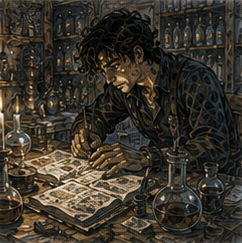
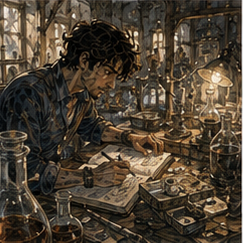
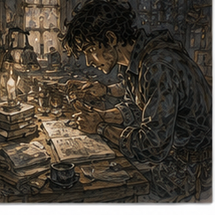

Hessa did not ask about Holl.
This was suspicious.

She put the copper strip on the table.
Same strip.
Probably.
I leaned closer.
“Did you mark it?”
“No.”
“How do you know it is the same one?”
“I don't.”
I looked at her.
She looked at me.
“That seems bad.”
“Why?”
“Repeatability.”
“We are not testing the copper.”
“We are using the copper to test me.”
“Yes.”
“So if the copper changes, the measurement changes.”
“It confirms draw. It does not measure you.”
I sat back.
That distinction was irritating.
Good.
The chair was still bad.
Also good.
Hessa pointed at my bread.
“You ate.”
“Yes.”
“Recently?”
“Yes.”
“What?”
“Bread.”
“That explains the bread.”
“Pepper stew earlier.”
“How much earlier?”
“Yesterday.”
“That is not recently.”
“I ate other things.”
“What?”
I stared at her.
“Food.”
She waited.
I had become Jorren.
This was catastrophic.
“Breakfast. Bread. Cheese. Apple.”
“Water?”
“Yes.”
“Sleep?”
“Enough.”
“Leg?”
“Closer to normal.”
“Closer?”
“Still slightly fuller than before Pessa's session.”
“Pain?”
“No.”
“Heat?”
“No.”
“Drainage?”
“No.”
“Hands?”
“Warm from getting here. Fine.”
She nodded.
No standing.
I knew before she said it.
“Seated.”
“Fine.”
“You sound disappointed.”
“I am practicing emotional range.”
“No, you're not.”
Fair.
She sat opposite me.
No stones today.
No tricks.
Copper strip.
Tea.
Her notebook.
I looked at the notebook.
“You wrote last time?”
“Yes.”
“What?”
“What happened.”
“Can I see?”
“No.”
“Why?”
“Because then you'll try to reproduce what I wrote instead of what happened.”
“That is deeply insulting.”
“Yes.”
She held the copper loop around two fingers.
Flat end toward me.
“Same amount as last time.”
“How exact?”
“Not exact.”
“Then how do I know?”
“You don't.”
“That seems like a problem.”
“It is.”
I stopped.
Hessa waited.
This was the thing I liked about her.
Not kindness.
Though she had some.
Not patience.
She had less.
She would say when the method was bad.
Not useless.
Not invalid.
Bad in a specific way.
We did not have a calibrated instrument for Greg.
Greg was unfortunately the instrument.
“Ready?” she asked.
“Yes.”
“Draw.”
I reached.
Mana came more easily this time.
Not more mana.
Less hesitation.
Chest.
Shoulders.
Arms.
Right side.
Hip.
Thigh.
Lower leg.
Foot.
Left hip.
Thigh.
Knee.
Then nothing.
I almost broke the draw.
Nothing below the knee.
Not the organized fullness.
Not cold.
Not occupied.
My ordinary phantom foot was there because my ordinary phantom foot was often there, but magically, internally, whatever word applied, the sequence stopped.
At the knee.
My heart sped.
“Hold,” Hessa said.
I held.
The mana remained.
Small.
Steady.
The copper strip did nothing visible.
Of course.
I waited for the absent foot to change.
It did not.
I tried not to wait.
This was impossible once I had noticed myself waiting.
“Release.”
I released.
Mana settled away.
Hessa lowered the copper.
“What?”
I told her.
She wrote.
I hated the sound of the pen.
“That's different.”
“Yes.”
“Why?”
“I don't know.”
“Did you confirm the draw?”
“Yes.”
“Same?”
“Broadly.”
“Broadly is doing too much work.”
“It is earning its pay.”
“Was the left-above-knee response present?”
“Yes.”
“Below?”
“I did not establish anything below.”
“Again.”
“No.”
I looked at her.
“You said repeat assessment.”
“We repeated it.”
“One trial.”
“Yes.”
“Yesterday was one trial.”
“Yes.”
“So we have two trials with different subjective results.”
“Yes.”
“That is almost maximally unhelpful.”
“No.”
“It is close.”
“No.”
“What did we learn?”
“That the below-knee sensation is not inevitable.”
I stopped.
Fine.
That was something.
Hessa pointed at me with the pen.
“And?”
I thought.
“That I can complete a minimal draw without it.”
“Yes.”
That was more important.
I disliked that too.
I had been treating the sensation as the interesting part.
Because it was strange.
Strange attracts thought.
But the draw had worked.
Again.
Without the strange thing.
“So the sensation may be irrelevant.”
“Maybe.”
“Attention-dependent.”
“Maybe.”
“Body map.”
“Maybe.”
“Some channel effect that varies.”
“Maybe.”
“Position was the same.”
“Mostly.”
“Mostly?”
“You arrived more tired yesterday.”
“I arrived more tired today.”
“You arrived more hurried yesterday.”
“I came from Holl today.”
“That was today.”
I blinked.
Right.
Holl had been less than an hour ago.
Pepper stew yesterday.
My internal calendar had become soup.
Hessa watched me.
“You need more sleep.”
“I slept.”
“Enough?”
“I said enough.”
“That is not a number.”
“Neither is broadly.”
She nodded.
Fair hit.
I smiled.
She did not.
Probably internally.
“Did you think about Holl during the draw?” she asked.
“No.”
“Before?”
“Yes.”
“During?”
“No. During I was waiting for my foot.”
“Then you were not distracted.”
“No.”
“Good.”
“Good?”
“It removes one story.”
“Does it?”
“No.”
I stared.
She shrugged.
“Maybe you were less anticipatory because you were distracted before. Maybe more because you knew the test. Maybe neither matters. We cannot tell.”
“You are enjoying this.”
“A little.”
Monster.
She poured tea.
I drank.
No second draw.
Apparently.
I waited anyway.

Hessa wrote another line.
Then closed the notebook.
“That is all.”
“No.”
“Yes.”
“We have time.”
“Yes.”
“I am here.”
“Yes.”
“You are here.”
“Yes.”
“The copper is here.”
“Yes.”
“This is a conspiracy.”
“Against what?”
“Sample size.”
Hessa leaned back.
“What would a third draw tell you?”
“If the sensation happens.”
“And if it does?”
“Two of three.”
“And?”
I opened my mouth.
Closed it.
“If it doesn't?”
“One of three.”
“And?”
I hated this.
“Not much.”
“Correct.”
“It would tell us repeatability.”
“No. It would give us one more observation.”
“Which contributes to repeatability.”
“Yes.”
“So.”
“So your body is still recovering from training, you hurried here, and we do not know the cost of repeated draws yet.”
“The first two did nothing.”
“You mean you noticed nothing.”
Fine.
“Also,” she said, “you are now emotionally invested in producing or not producing the foot sensation.”
“I am not.”
She looked at me.
“I am scientifically interested.”
“That is worse.”
I drank tea.
The phantom left foot felt slightly turned inward.
I adjusted a foot that did not exist.
The sensation corrected.
Body map.
Probably.
No.
Just body map as a description.
Not cause.
I had learned something from Hessa.
This was unfortunate.
“What next?” I asked.
“Not magic.”
“What?”
“Today.”
“You said maybe vary position.”
“I said maybe.”
“You and Pessa have coordinated vocabulary.”
“We meet weekly to discuss how to annoy you.”
“I knew it.”
She ignored me.
“Your swelling is almost settled.”
“Yes.”
“Go home. Or work. Or eat. Do not train today.”
“Pessa decides training.”
“Then tell Pessa I think stacking training after a draw today is stupid.”
“That sounds like deciding training.”
“That sounds like medical advice.”
“You said you own magic.”
“I also own telling you when I think you are being stupid.”
“That jurisdiction is dangerously broad.”
“Go.”
I did not go.
I looked at the copper.
“What does it actually do?”
Hessa sighed.
Victory.
“Copper is easy to observe for a small induced response if I know what I am looking for.”
“What response?”
“No.”
“Hessa.”
“You will start watching the copper.”
“It doesn't visibly change.”
“You'll still watch.”
True.
“Is it detecting mana?”
“Not generally.”
“Your mana?”
“Not exactly.”
“My draw?”
“Close enough.”
“That is terrible.”
“Yes.”
“Can it false positive?”
“Yes.”
“False negative?”
“Yes.”
“Then why use it?”
“Because I am not using it alone.”
There.
That was the answer.
I looked at her hands.
“You're sensing too.”
“Yes.”
“And watching me.”
“Yes.”
“And asking subjective report.”
“Yes.”
“And checking physical response.”
“Yes.”
“And comparing across days.”
“Yes.”
“So copper is one witness.”
Hessa's expression changed.
Barely.
“One witness,” she said.
Good.
I liked that.
Not enough to write it down.
Probably later.
“Can I ask about records?”
“No.”
“One question.”
“No.”
“You gave me one last time.”
“That created expectations.”
“Did anyone report inconsistent missing-limb sensation during draw?”
Hessa stared.
I waited.
She should say no.
Not because the answer was no.
Because she had said no questions.
“Some reports describe inconsistent sensation,” she said.
I won.
Then she continued.
“The records are bad enough that I do not know whether they mean the same thing you mean.”
Victory revoked.
“Pain?”
“Sometimes.”
“Cold?”
“Sometimes.”
“Nothing?”
“Sometimes.”
“Useful.”
“No.”
“Potentially.”
“No.”
“Fine.”
She pointed at the door.
I stood.
Both crutches.
Right foot.
Push.
No phantom mistake.
No magical sensation.
Just standing.
At the door I stopped.
“Tomorrow?”
“No.”
“What?”
“Day after.”
“Why?”
“Because I want a boring day between.”
I considered objecting.
Then I thought about Holl.
Same lot.
Do not change the fixture yet.
Track bench.
Wait.
This was not the same problem.
I almost made it the same problem.
Caught it.
Good.
“Day after,” I said.
Hessa narrowed her eyes.
“What?”
“Nothing.”
“You agreed too fast.”
“I am growing.”
“No.”
“Probably.”
I opened the door.
“Greg.”
I turned.
“No draw.”
“I know.”
“Say it.”
“I will not draw mana without you.”
“Or another practitioner I explicitly clear to supervise.”
I blinked.
That was new.
“Are you planning to clear someone?”
“No.”
“Then why add it?”
“Because rules should say what they mean.”
I smiled.
“Day after.”
“Day after.”
Outside, I had nowhere urgent to be.
Again.
This was becoming suspicious.

I stood on the street and considered the Guild, home, food, Lyssa, Jorren, Pessa, Holl, absolutely nothing, and several bad ideas.
The second draw had worked.
The interesting sensation had not.
I was happier about the first fact than unhappy about the second.
This seemed healthy.
I distrusted it immediately.
Then I went to find lunch.